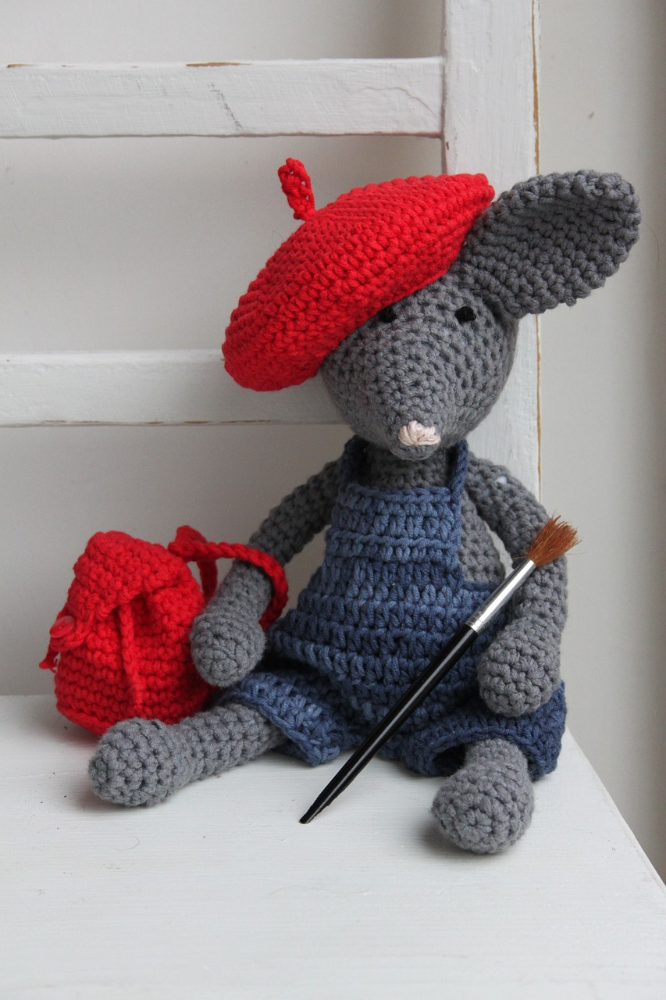
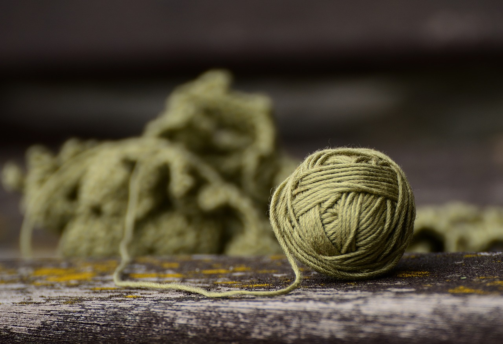

Crochet
Crochet is a creative craft where you use a small hook-shaped needle to make loops with yarn or thread. With crochet, you can create many things, like cozy blankets, fashionable clothes, pretty doilies, and cute stuffed animals. It's a fun way to show your creativity and make unique, handmade items.
Here is a video that explain more about it!

Types of yarn
- Acrylic Yarn: Soft and easy to work with.
- Cotton Yarn: Ideal for summer projects.
- Merino Wool Yarn: Warm and comfortable.
- Bamboo Yarn: Lightweight and cool.
- Alpaca Yarn: Soft and luxurious.